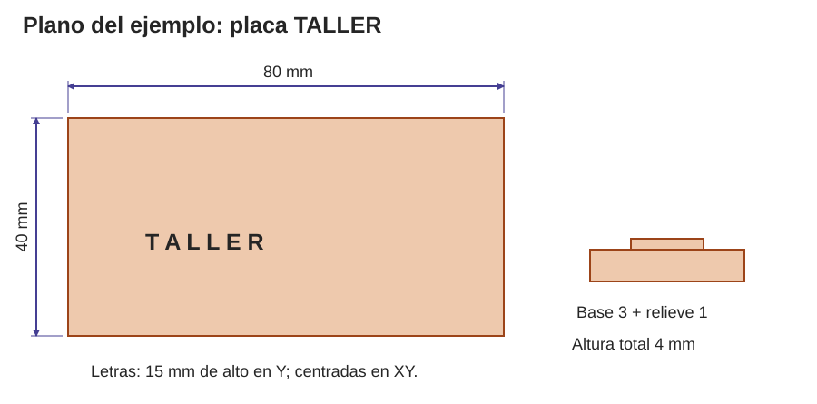

Contenido
Una ficha que otra persona pueda seguir
Documentar significa hacer visible una decisión y su evidencia. Un plano indica medidas nominales; una tabla de control registra medidas reales. No los confundas. Usa la plantilla del equipo y completa sus siete apartados durante el proyecto.
Ejemplo completo · Placa «TALLER»
Ejemplo didáctico de fabricación manual. Las lecturas de medida que aparecen a continuación son datos de ejemplo para aprender a documentar, no resultados de una pieza ensayada en este libro.
1. Identificación y necesidad
Placa de identificación de interior para reconocer la puerta del taller. El rótulo anterior del ejemplo era pequeño y poco contrastado; lo consulta diariamente quien accede al espacio. Vía manual: cartón rígido con letras superpuestas. Prototipo para comprobar lectura antes de una versión duradera. Requisitos: 80 × 40 mm, palabra legible, fijación sin aristas ni piezas sueltas.
2. Plano acotado y control dimensional

| Magnitud | Nominal | Lecturas de ejemplo | Decisión del ejemplo |
|---|---|---|---|
| Ancho | 80 mm | 80,0; 80,2; 80,0 mm | Admitir para prototipo si el requisito permite ±0,5 mm. |
| Fondo | 40 mm | 40,1; 40,0; 40,0 mm | Admitir con el mismo criterio. |
| Base | 3 mm | 2,9; 3,0; 3,0 mm | Anotar compresibilidad del cartón; contacto suave con calibre. |
Para copiar este método, selecciona vistas que expliquen la pieza: superior para contorno y posición de letras, lateral para espesor y relieve. Sitúa cotas fuera del dibujo, con líneas auxiliares y unidades. Una regla en una foto ayuda con la escala, pero no sustituye diámetros, distancias y cotas ocultas. Comprueba una distancia conocida si usas una plantilla 1:1.
3. Materiales y elección
Un retal de cartón rígido 80 × 40 × 3; cartulina de 1 mm para letras; adhesivo compatible según etiqueta y sistema de fijación temporal autorizado. Cantidad neta de base: 32 cm²; anotar también retal inicial y desperdicio. Coste de ejemplo con material recuperado: no se compra base, pero se registra consumo de adhesivo sin fingir que el impacto es cero. Se elige cartón para probar lectura con poco coste; no se elige para intemperie ni carga.
4. Fabricación y prueba
Marcar dos medidas y escuadra; fijar sobre base de corte; cortar mediante el procedimiento demostrado; suavizar borde; presentar letras, comprobar alineación y adherir respetando presión/curado del producto. No hay parámetros de impresión: la pieza se fabrica a mano.
Prueba didáctica de ejemplo: colocar temporalmente a la distancia de uso elegida y pedir a tres personas leer el rótulo sin acercarse ni conocer de antemano la palabra. Resultado ficticio de ejemplo: dos lecturas correctas y una duda; cambio propuesto: aumentar contraste y repetir. Para vuestra entrega registrad observaciones reales, sin nombres. Comprobad además bordes, adhesión y medida; no inventéis un ensayo para completar una casilla.
5. Ciclo de vida
Materia prima: retal recuperado, de composición que se comprueba. Fabricación: corte y pegado, recortes reutilizables para otras letras. Transporte: del taller a la puerta, sin embalaje adicional. Uso: interior seco, limpieza suave y revisión de adhesión. Fin de vida: recuperar piezas útiles; separar sólo lo que admita la recogida local, teniendo en cuenta adhesivos y mezcla de materiales. Mejora: fijación desmontable para cambiar el rótulo sin rehacer la base.
6. Uso y mantenimiento
Prototipo de interior; no es señal de emergencia ni señal braille certificada. Revisar desprendimientos y aristas antes de colocarlo; retirar si falla la adhesión. La ubicación final se acuerda con el responsable del espacio después de la prueba de lectura.
7. Licencia y comunidad
«Placa TALLER», diseño didáctico original de José Luis García, IES El Majuelo, bajo Creative Commons Reconocimiento–CompartirIgual 4.0 (CC BY-SA 4.0). Permite compartir y adaptar con atribución y, al compartir adaptaciones, licencia compatible según sus términos. Compartir plano, medidas y resultado de prueba permite que otra persona mejore el contraste; una comunidad exige respetar licencias, documentar cambios y no presentar como propio el trabajo ajeno. Este prototipo contribuye a un espacio común del centro.
Cómo documentar vuestra pieza
Elegir vistas, cotas y evidencias
Una vista debe responder a una pregunta: forma, tamaño, posición de un agujero, espesor o unión.
- En CAD selecciona vistas superior, frontal y lateral con proyección ortográfica, o dibuja un croquis con escuadra. Incluye sólo las vistas necesarias para no repetir información.
- Añade cotas de dimensiones exteriores, espesores, huecos, distancias y uniones. Indica si una cifra es nominal de diseño o medida real.
- Adjunta evidencias de tu proceso: en digital, capturas de capas y perfil; en manual, plantilla/despiece, sujeción, corte/unión y control dimensional.
- Escribe qué probaste, con qué método y qué resultado obtuviste. Si una prueba no se hizo, declara el límite en el registro, no como resultado aprobado.
- Revisa con otra persona: debe poder explicar la fabricación leyendo la ficha. Exporta a PDF y comprueba todas las páginas antes de entregar.
Resultado esperado: Ficha completa, legible y fiel al trabajo realizado.
Comprueba: Todas las cifras tienen unidad y origen; no hay una impresión ficticia en la vía manual.
Error frecuente: Usar la masa del ejemplo o sus lecturas como si fueran las de tu pieza.
Licencias: qué permiso se comparte
| Condición | Alcance explicado |
|---|---|
| BY | Atribuir autoría, enlazar licencia e indicar cambios cuando corresponda. |
| SA | Si compartes una adaptación, hazlo bajo la misma licencia o una compatible permitida. |
| NC | El uso autorizado por la licencia debe ser no comercial; no se reduce a si alguien obtiene cualquier ingreso. |
| ND | En CC 4.0 puedes producir adaptaciones privadas, pero la licencia ND no permite compartir material adaptado. No significa que sea imposible modificarlo en privado. |
| BY-SA 4.0 | Adecuada si quieres permitir que se compartan mejoras con atribución y compartir igual; comprueba siempre la licencia de lo que reutilizas. |
Ejemplo de atribución al adaptar este plano: «Basado en Placa TALLER, de José Luis García, CC BY-SA 4.0; cambios: ancho 100 mm y contraste de letras». Añade el enlace de la fuente real y de la licencia. Si el recurso procede de otro lugar, usa su autor, título, enlace y licencia reales.
La entrega del curso va a Moodle. Declarar una licencia no obliga a publicar fuera de la plataforma. Las licencias de derechos de autor tampoco certifican seguridad física ni eliminan derechos de marcas o patentes que pudieran existir.
Piensa y comprueba. Tienes un diseño CC BY-ND 4.0. Lo adaptas para uso privado y quieres publicar tu versión modificada bajo esa misma licencia. ¿Son equivalentes ambas acciones?
Ver explicación
No. La adaptación privada está permitida por CC BY-ND 4.0; compartir la adaptación no queda autorizado por esa licencia. Necesitarías otro permiso aplicable. Consulta sus términos.
Fuente: Texto legal CC BY-ND 4.0.
Relaciona
Relaciona cada sigla de las licencias Creative Commons con lo que significa.
Relaciona cada sigla de las licencias Creative Commons con lo que significa.
", "showMinimize": false, "itinerary": {"showClue": false, "clueGame": "", "percentageClue": 40, "showCodeAccess": false, "codeAccess": "", "messageCodeAccess": ""}, "cardsGame": [{"url": "", "x": 0, "y": 0, "author": "", "alt": "", "audio": "", "color": "#000000", "backcolor": "#ffffff", "eText": "BY", "urlBk": "", "xBk": 0, "yBk": 0, "authorBk": "", "altBk": "", "audioBk": "", "colorBk": "#000000", "backcolorBk": "#ffffff", "eTextBk": "Atribuir%20autor%C3%ADa%2C%20licencia%20y%20cambios%20cuando%20corresponda"}, {"url": "", "x": 0, "y": 0, "author": "", "alt": "", "audio": "", "color": "#000000", "backcolor": "#ffffff", "eText": "SA", "urlBk": "", "xBk": 0, "yBk": 0, "authorBk": "", "altBk": "", "audioBk": "", "colorBk": "#000000", "backcolorBk": "#ffffff", "eTextBk": "Al%20compartir%20adaptaciones%2C%20usar%20la%20misma%20licencia%20o%20una%20compatible%20permitida"}, {"url": "", "x": 0, "y": 0, "author": "", "alt": "", "audio": "", "color": "#000000", "backcolor": "#ffffff", "eText": "NC", "urlBk": "", "xBk": 0, "yBk": 0, "authorBk": "", "altBk": "", "audioBk": "", "colorBk": "#000000", "backcolorBk": "#ffffff", "eTextBk": "Uso%20no%20comercial%20seg%C3%BAn%20los%20t%C3%A9rminos%20de%20la%20licencia"}, {"url": "", "x": 0, "y": 0, "author": "", "alt": "", "audio": "", "color": "#000000", "backcolor": "#ffffff", "eText": "ND%20en%20CC4.0", "urlBk": "", "xBk": 0, "yBk": 0, "authorBk": "", "altBk": "", "audioBk": "", "colorBk": "#000000", "backcolorBk": "#ffffff", "eTextBk": "Permite%20adaptar%20en%20privado%3B%20no%20autoriza%20compartir%20material%20adaptado"}, {"url": "", "x": 0, "y": 0, "author": "", "alt": "", "audio": "", "color": "#000000", "backcolor": "#ffffff", "eText": "Licencia%20del%20dise%C3%B1o", "urlBk": "", "xBk": 0, "yBk": 0, "authorBk": "", "altBk": "", "audioBk": "", "colorBk": "#000000", "backcolorBk": "#ffffff", "eTextBk": "Permiso%20de%20derechos%20de%20autor%3B%20no%20certifica%20seguridad%20f%C3%ADsica"}], "isScorm": 0, "textButtonScorm": "Guardar la puntuación", "repeatActivity": true, "weighted": 100, "textAfter": "", "version": 2, "percentajeCards": 100, "type": 0, "showSolution": true, "timeShowSolution": 3, "time": 3, "evaluation": false, "evaluationID": "f96bc37c-5aaf-40e4-af65-a544218a46a6", "id": "idevice-1790324688894-qlamjsb6q", "msgs": {"msgSubmit": "Enviar", "msgClue": "¡Genial! La pista es:", "msgCodeAccess": "Código de acceso", "msgPlayStart": "Pulsa aquí para jugar", "msgScore": "Puntuación", "msgErrors": "Errores", "msgHits": "Aciertos", "msgMinimize": "Minimizar", "msgMaximize": "Maximizar", "msgFullScreen": "Pantalla Completa", "msgExitFullScreen": "Salir del modo pantalla completa", "msgNoImage": "Pregunta sin imágenes", "msgEndGameScore": "Comience la partida antes de guardar la puntuación.", "msgScoreScorm": "La puntuación no se puede guardar porque esta página no forma parte de un paquete SCORM.", "msgOnlySaveScore": "¡Solo puede guardar la puntuación una vez!", "msgOnlySave": "Solo puede guardar una vez", "msgInformation": "Información", "msgYouScore": "Su puntuación", "msgAuthor": "Autoría", "msgOnlySaveAuto": "Su puntuación se guardará después de cada pregunta. Solo puede jugar una vez.", "msgSaveAuto": "Su puntuación se guardará automáticamente después de cada pregunta.", "msgSeveralScore": "Puede guardar la puntuación tantas veces como quiera", "msgYouLastScore": "La última puntuación guardada es", "msgActityComply": "Ya ha realizado esta actividad.", "msgPlaySeveralTimes": "Puede realizar esta actividad cuantas veces quiera", "msgClose": "Cerrar", "msgAudio": "Audio", "msgNumQuestions": "Número de tarjetas", "msgTryAgain": "Necesitas al menos %s% de respuestas correctas para obtener la información. Inténtalo de nuevo.", "msgEndGameM": "Has completado el juego. Tu puntuación es %s.", "msgUncompletedActivity": "Actividad no completada", "msgSuccessfulActivity": "Actividad superada. Puntuación: %s", "msgUnsuccessfulActivity": "Actividad no superada. Puntuación: %s", "msgTypeGame": "Relaciona", "msgCheck": "Comprobar", "msgRestart": "Reiniciar"}}